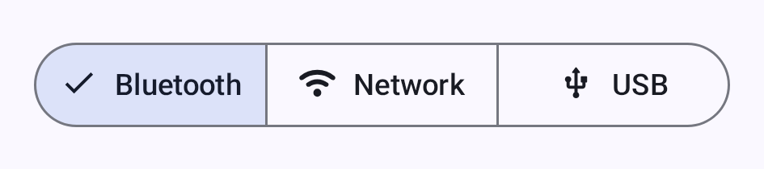
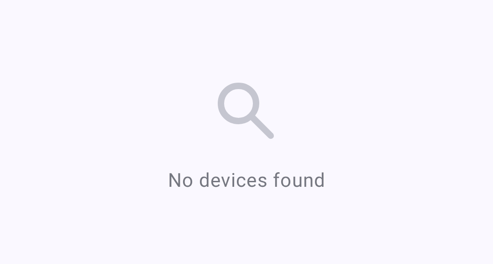
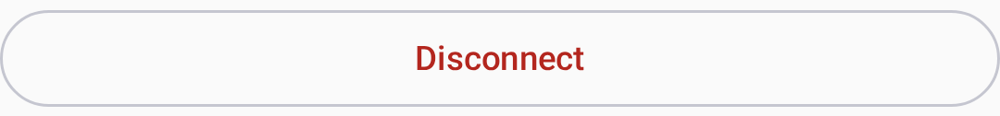

Meshtastic supports multiple transport methods to communicate between your phone or desktop and a radio.
Bluetooth Low Energy is the default and most common connection method on Android.
123456.
You can change the pairing method, or turn Bluetooth on for a radio that ships with it off, under Settings → Device configuration → Bluetooth — see Settings — Radio & User. For more information, see Bluetooth configuration on meshtastic.org.
Use the transport selector — a segmented button row below the connection card — to switch between the Bluetooth, Network, and USB transports (one is active at a time):

💡 Tip: If your radio doesn’t appear, check that it isn’t already connected to another phone, or out of range.
The screen names anything on the app’s side that is blocking a scan, with the fix attached:
| What you see | What it means |
|---|---|
| A card asking for Nearby devices | The permission has not been granted. Grant permission requests it; once Android stops prompting, the button becomes Open settings. |
| Bluetooth is off | The adapter is disabled — the card opens Bluetooth settings. |
| Bluetooth scanning also needs location services | Android 11 and older only: the permission is held but the system location toggle is off. |
| No card, empty list | Nothing on this side is blocking the scan — the radio is out of range, off, or already connected elsewhere. |
The explanation lives in that card, not in the scan control: tapping Scan for Bluetooth devices after you have declined once asks Android again directly.
| Icon | State | Description |
|---|---|---|
| 🟢 | Connecté | Active radio link established |
| 🟡 | Connexion en cours | Handshake in progress |
| 🔴 | Déconnecté | No active connection. The app retries automatically, with a growing delay between attempts |
| ⚪ | Appareil en veille | The radio is in light sleep — the app is waiting for it to wake and reconnect, not failing |
These are the four states the app models. “Device sleeping” is normal on power-saving configurations and needs no action.
When connecting, a status indicator shows the current connection state — tap Stop Connecting to abandon the attempt:

If no devices are found, the app shows an empty state with instructions:

USB connections provide a wired alternative, useful for desktop or when Bluetooth is unavailable.
ℹ️ Note: USB connections require OTG support on Android devices.
Some Meshtastic radios support Wi-Fi/Ethernet connectivity, allowing TCP-based connections over your local network. Get the radio onto your network first. Connect to it over Bluetooth or USB, open Settings → Device configuration → Network, and under Wi-Fi Options turn on Wi-Fi enabled and enter the SSID and Password. The Network screen appears only for radios whose hardware supports Wi-Fi or Ethernet. Once the radio has an address, come back and connect to it over the network.
_meshtastic._tcp). Discovered devices appear in the list; tap one to connect.4403).Network discovery uses mDNS, which only works when both your phone and the radio are on the same subnet. If the phone is not on Wi-Fi at all, the app warns that a network scan may find nothing. On Android 17 and newer, the app needs the Local network permission to reach a radio on your own Wi-Fi at all — not only to discover it — so typing the address by hand does not work around a denied permission. Grant it from the card on the Network pane, or from the Permissions section of Settings. A radio on a public address, or one reached over a VPN, needs no permission.
Settings → Wi-Fi Provisioning for mPWRD-OS is a separate, narrower tool. It sends Wi-Fi credentials over Bluetooth to mPWRD-OS devices only, using their own protocol — it does not configure Wi-Fi on an ordinary Meshtastic radio. It is available on both Android and desktop.
If the scan reports No networks found or fails outright, move the phone closer to the device and scan again. If Failed to apply Wi-Fi configuration comes back, check the password and try again.
Being connected is not the same as being able to transmit.
A radio leaves the factory with no LoRa region set, and it does not transmit until you set one. When you connect such a radio, the Connect tab shows a Set your region card; tap it to open the LoRa screen and choose the region you are in.
Once the region is set, the tab warns you if the radio is receive-only: a Transmit is disabled card, reading “This device can receive but will not send anything over LoRa.” Tap it to open the same screen and turn Transmit Enabled back on. Only one of the two cards appears at a time — an unset region already stops the radio transmitting, so the app names that first and holds the transmit card back until you have set a region.
For more information, see Settings — Radio & User.
The app reconnects to the last selected radio on startup. You can switch transports from the Connect tab at any time.
To disconnect, tap the disconnect button on the Connect tab:

On Desktop (Linux/macOS/Windows), the app supports:
See Desktop App for platform-specific details and keyboard shortcuts.